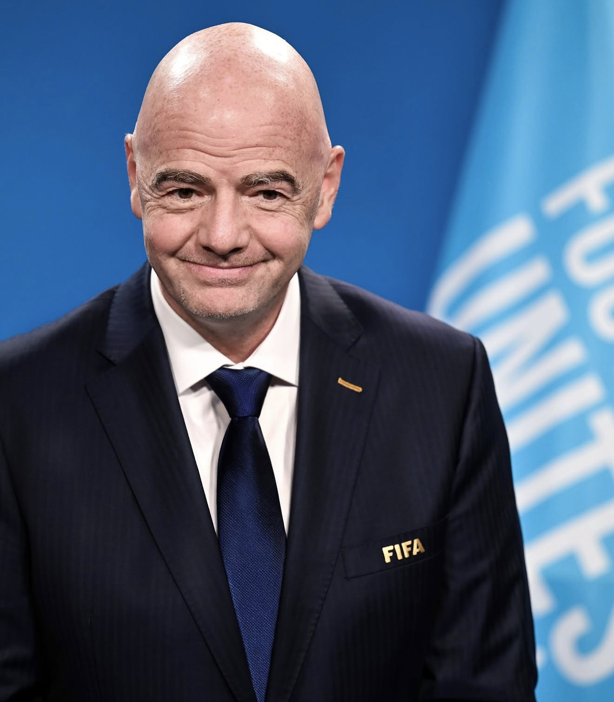
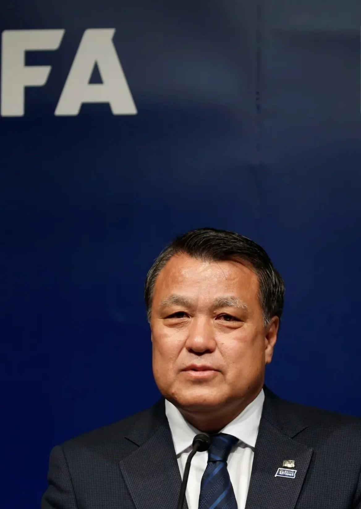

Infantino has a race on his hands
France's Philippe Diallo and Japan's Kohzo Tashima will stand against him in Rabat in March. Africa's 54 votes are already in his corner.

For the first time since he took the job in 2016, Gianni Infantino will have to beat someone to stay FIFA president. On Thursday, 19 November 2026, FIFA said it had received three candidatures for next year's election: Infantino, Philippe Diallo, president of the French Football Federation, and Kohzo Tashima, the former president of the Japan Football Association.
The vote takes place at the 77th FIFA Congress in Rabat, Morocco, on 18 March 2027. Before then, FIFA's electoral committee has to check and admit each candidate, and member associations will be told the final names no later than 18 February 2027.
One name is missing. Ramon Vega, the former Switzerland and Tottenham defender who announced in October that he would run, is not on FIFA's list. To get onto the ballot, a candidate needs nominations from at least five of FIFA's 211 member associations.
The incumbentInfantino and a fourth term
Infantino, who is Swiss, was elected in February 2016 to replace Sepp Blatter, beating Sheikh Salman bin Ebrahim Al Khalifa of Bahrain in a vote. He was re-elected unopposed, by acclamation, in 2019 and again in 2023. FIFA's rules cap a president at three terms, but FIFA's Council accepted in 2022 that his first stint, the three years left of Blatter's term, doesn't count as a full one. That is why he can run for a fourth.
History is on his side. The last time a sitting FIFA president lost an election was 1974, when João Havelange beat Stanley Rous.
Six months ago this looked like a formality. The trouble started during the 2026 World Cup itself. In July, FIFA lifted a one-match ban on US striker Folarin Balogun before his side's round-of-16 game against Belgium, after Donald Trump phoned Infantino about the red card. Belgium's federation said it was astonished, and UEFA said FIFA had crossed a red line. Infantino said FIFA's disciplinary committee acted independently.
Weeks later, just after the final, Infantino backed a plan to sell up to a 20% stake in a new unit running FIFA's tournaments, the World Cup included, to private investors. UEFA's 55 members voted to boycott FIFA competitions unless it was dropped, and FIFA scrapped it within days. UEFA then said publicly that it had lost confidence in his leadership, and federations across Europe, France among them, withdrew their support for his re-election. Concacaf, the confederation for North and Central America and the Caribbean, called for a full review of his presidency.
The challengerPhilippe Diallo, Europe's pick
Diallo, 63, was born in Saint-Nazaire in western France and has spent more than 30 years in football administration, most of it behind the scenes. From 1992 to 2021 he ran the UCPF, the body that represents France's professional clubs as employers. He sat on the board of the French professional league from 2009 to 2021 and served on FIFA's Dispute Resolution Chamber.
He has run the French federation since January 2023, first as interim president after Noël Le Graët stepped aside, and was re-elected in December 2024 for a term to 2028. On 16 November, the European national associations represented on UEFA's Executive Committee and the FIFA Council unanimously invited him to stand, and he accepted. Reuters reported that he did not yet have the backing of all 55 UEFA members, so Europe isn't a guaranteed bloc for him either.
There's an African thread to his story. His father, Souleymane Diallo, is a boxer born in Dakar, Senegal, who took up boxing in the French Navy and fought for France at the 1960 Olympics in Rome. Diallo has also been clear about the size of the job: he says he needs 106 votes, a majority, and claims he has support beyond Europe.
The other challengerKohzo Tashima runs without the AFC

Tashima, 68, played for Japan, sat on the FIFA Council from 2015 and led the Japan Football Association from 2016 to 2024, when he became its honorary president. He is the first Japanese candidate for FIFA's top job, and he is running on governance and integrity, saying he wants FIFA to be a more trusted organisation.
His problem is at home. The Asian Football Confederation, with 47 members, has already backed Infantino. Tashima himself puts his chances at 20 to 30 percent.
The swing voteWhere Concacaf stands
Concacaf's 41 members are the bloc nobody can count yet. All 41 sent letters backing Infantino before the World Cup, but after the stake-sale row The Guardian reported that many were thinking about withdrawing them. Concacaf president Victor Montagliani chose not to run himself, so where those 41 votes land is still an open question.
Why Africa mattersAfrica's 54 votes, pledged to Infantino
This is where it gets interesting for us. CAF's 54 member associations make up the biggest single bloc in FIFA, close to a quarter of the 211 votes. In April 2026, in Vancouver, all 54 agreed to back Infantino for 2027 to 2031, and CAF president Patrice Motsepe repeated that unanimous support in October. Asia's AFC, with 47 members, and South America's CONMEBOL, with 10, are behind him too.
Add those up and Infantino has public pledges from 111 federations, five more than the 106 needed. On paper, that's enough. But the vote is secret, so a pledge isn't a guaranteed vote.
So the election that will decide who runs world football is being held in Africa, and Africa has already said who it wants. Whether that holds for four more months, through a secret ballot, is the real question in Rabat.
Sources
- FIFA: FIFA receives three candidatures for next year's presidential election
- Al Jazeera: FIFA confirms Diallo, Tashima as Infantino's challengers (19 Nov 2026)
- beIN Sports: Gianni Infantino faces two challengers for the FIFA presidency
- Yahoo Sports: Three candidates for one post
- Wikipedia: 77th FIFA Congress
- UEFA: European national associations unanimously support Philippe Diallo
- Al Jazeera: UEFA backs France's Philippe Diallo (16 Nov 2026)
- Times Live / Reuters: Diallo's narrow European base
- theScore / AFP: Diallo claims support from outside Europe
- Wikipedia: Souleymane Diallo (boxer)
- Wakat Séra: Philippe Diallo, fils d'un champion de boxe sénégalais
- Al Jazeera: Infantino's Japanese challenger claims he could unseat FIFA president
- Deccan Chronicle / AFP: Japan's Kozo Tashima submits bid
- Inside World Football: Tashima announces intention to run
- Citizen Digital / AFP: UEFA backs Diallo; AFC backing Infantino
- Insider Sport: Ramon Vega needs five federations to reach the ballot
- NPR: FIFA scraps deal to sell stakes in World Cup (31 Jul 2026)
- Times Live / Reuters: UEFA says it has lost confidence in Infantino
- Reuters via The Star: French federation withdraws support for Infantino
- ESPN: CAF announce unanimous support for Infantino
- Times Live: Africa's football leaders back Infantino (9 Oct 2026)
- Telecom Asia: Infantino's term-limit argument
- UEFA: Philippe Diallo profile
- UEFA: Philippe Diallo interview on his father and career
- Europe 1: Philippe Diallo led the UCPF from 1992 to 2021
- FFF: Philippe Diallo re-elected president (14 Dec 2024)
- Wikipedia: Philippe Diallo
- AP via PBS: FIFA lifts Balogun's suspension after Trump calls Infantino
- NPR: Balogun's ban is lifted by FIFA
- The Nightly / AP: UEFA says FIFA crossed a red line
- Buenos Aires Herald: Concacaf calls for reckoning of Infantino's tenure
- World Soccer Talk: Concacaf piles pressure on Infantino
- Caliber / The Guardian: Concacaf members weigh pulling support
- Folha de Pernambuco: Concacaf federations discuss revoking support letters
- TSN / Canadian Press: Montagliani not in the field
- AllAfrica: African football chiefs back Infantino
- Al Jazeera: Africa and Asia back Infantino for fourth term (30 Apr 2026)
- theScore: CAF backing Infantino; first term ruling